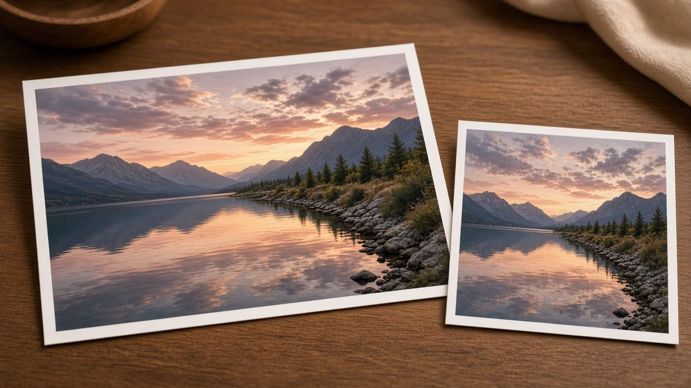
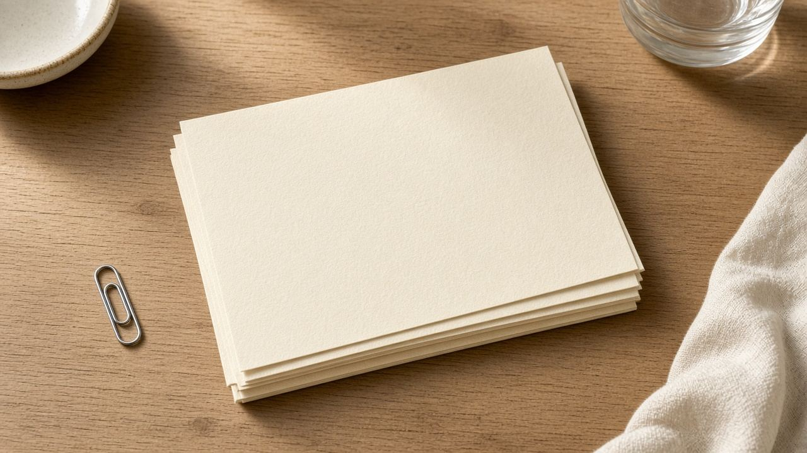
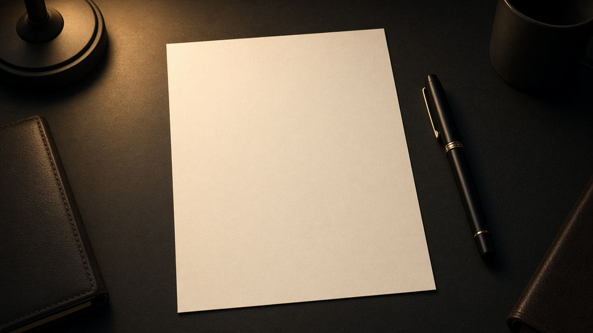
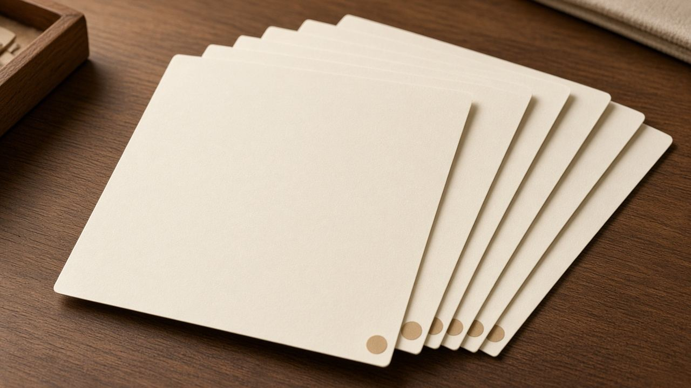
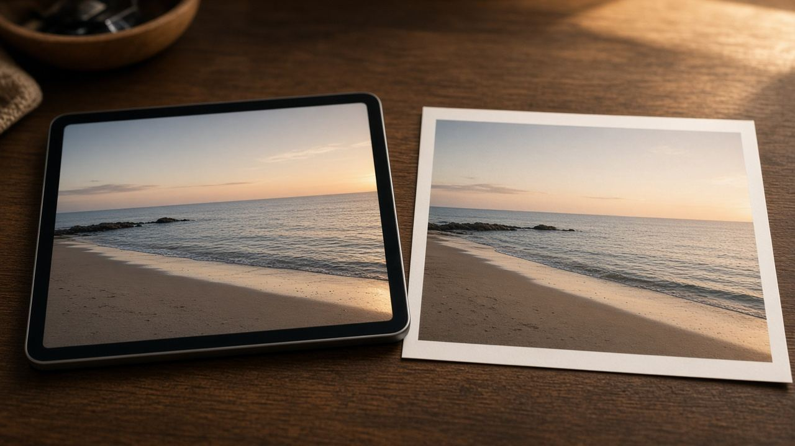

أدوات
أدوات
هنا بنشرح المهارة نفسها: امتى الملف يصغر، وليه النص في الـ PDF يفضل يتحدد، وإيه اللي العلامة المائية بتعمله وإيه اللي مش بتعمله. لو في أداة مقابلة على Creativo Tools، اللينك مكتوب في آخر المقال وواضح إنه موقع تاني.

صورإزاي تضغط صورة وتفضل واضحة
الفرق بين JPEG وPNG وWebP، وليه رقم الجودة مش نسبة من جمال الصورة.

PDFجمع ملفات PDF في ملف واحد
ترتيب الصفحات، والملفات المقفولة بكلمة سر، وليه النص يفضل يتحدد لو الدمج من غير إعادة رسم.

كتابةسيرة ذاتية من صفحة واحدة
إيه اللي يكفي في أول سيرة، وإزاي ملف Creativo Tools بينزل، وإيه حدود النص جواه.
 حماية
حمايةعلامة مائية بالاسم أو بالصورة
امتى العلامة بتمنع النسخ العابر، وإيه الفرق بين ختم صورة وختم PDF، وليه دي مش ملكية قانونية.
خصوصيةطمس الوجوه قبل ما تنشر الصورة
النموذج مش بيلاقي كل وجه، وطمس البكسل مش بيمسح مكان التصوير من بيانات الملف.

PDFترقيم صفحات البحث
رقم الصفحة، وتخطي الغلاف، وحد الأربعين صفحة، والفرق بين رقم مرسوم ونص قابل للتحديد.

صورالبكسل وحجم الطباعة: ليه 72 مش سر الجودة
الشاشة بتعرض البكسل. الطباعة بتحسب البكسل على السنتيمتر. رقم 300 شائع للصور، ومش قانون لكل الملفات.
 ملفات
ملفاتامتى تبعت PDF وامتى تبعت Word
PDF بيثبّت الشكل. Word بيسمح بالتعديل. الاختيار حسب اللي هيحصل للملف بعد الإرسال.